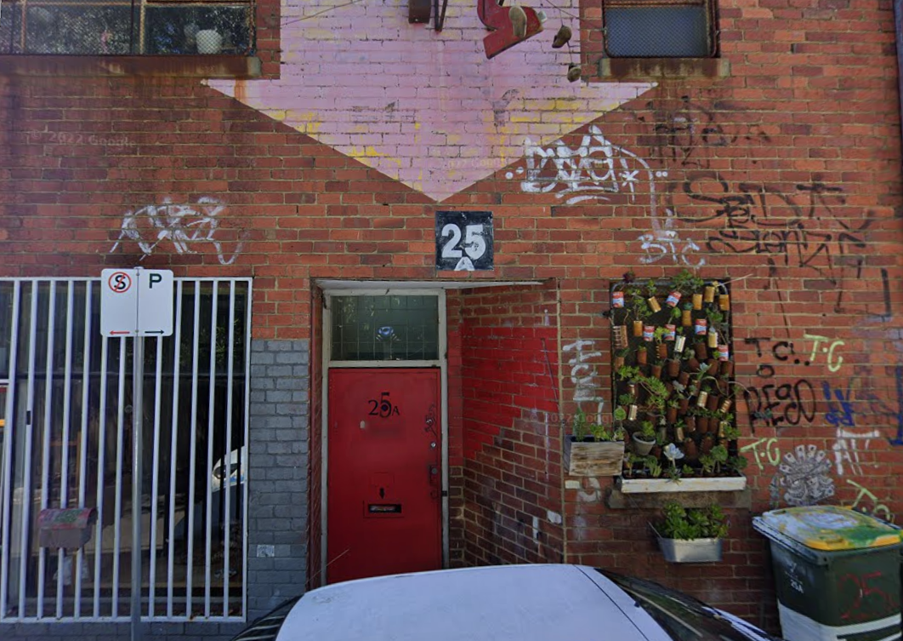
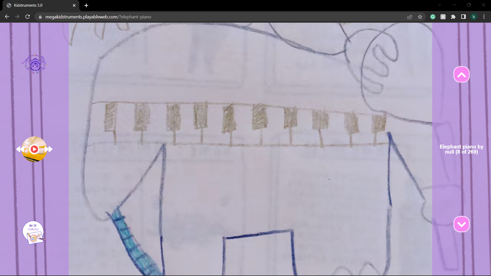

1. The First Online Meeting
Bob, Glen, and I had a chat about the playable street and the initial
intention to build the site, as well as my interests and how can I work on
the projects. I had a brief idea of what playable street is doing and the
general introduction of its many projects.
2. Playable pages, the technology and the design
Glen and I had in-depth on the projects the playable street team is working on,
and how my interest in web development and making interactive installations
using pure data would help benefit the development. Our discussion focuses
both on the technology side and the design part.
3. Expriments on PD patch
Glen and I had chats about some interesting interactive websites that could
be helpful for us to develop the Kidstrument project. Then we move on to discuss
how pure data could possibly work for interactivity. I took the challenge to make
a PD patch from scratch to achieve interactions through pressing the key W.
4. In-person meeting at Northcote studio
At playable street’s 25A studio in Northcote, I spent the afternoon with Bob,
Glen, and Cayn to work, discuss and brainstorm on making the physical DIY instruments
as well the website. Our discussion covers ideas on web design and specific technology
to achieve the interactions. Also, Bob lead me to keep working on the PD patch,
debugging, and refining. It’s a unique experience to work collaboratively with
professionals from different areas.

5. Focus on developing the Kidstrument site
In the meeting with Bob and Gleb, we decide that I will focus on developing the
website and adding or changing functions to the original website. I’m able to
join playable street’s GitHub page and learn to work collaboratively with branch
management on GitHub. Apart from that, I also had the chance to know more about
web hosting on platforms such as Netlify.
6. Get hands-on experience with P5.js and tone.js
Under Bob’s advice, I had the chance to have a close look at the two javascript
libraries, P5.js and tone.js. It’s helpful for me cause it’s the first time I
use both two libraries in one project. There are many detailed issues such as
naming the IDs carefully and making sure the two frameworks wouldn’t conflict
with each other. This task showed the importance of having eyes that care for
details in a complex real-world context.

7. Adding a new feature to the Kidstrument site
After analyzing the existing website, from the perspective of user experience.
I made a prototype on Figma for the new music player feature so that Glen and
Bob can review it and give me feedback. We all think this new function and
interface could benefit the Kdistruments website and its user experience.
So I started to build it from scratch, which requires me to do the research
and implement it with the existing framework. This work improves my ability
to work indepently and my problem-solving skills dramatically.

8. Keep developing the site and working on layouts
In the meeting with Glen and Bob, I was able to demonstrate the new functionality.
Further, we had some user tests, and find out the website was not responsive
for mobile devices. So, based on this real-world problem, I was able to keep
developing and improving the layout under Bob’s supervision.